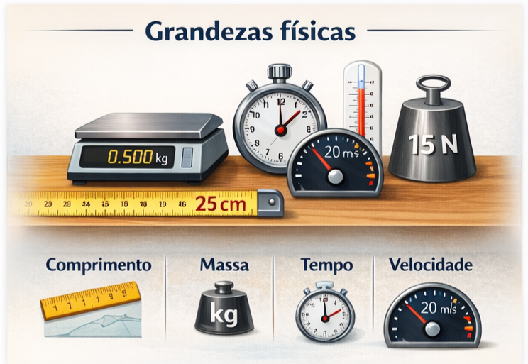
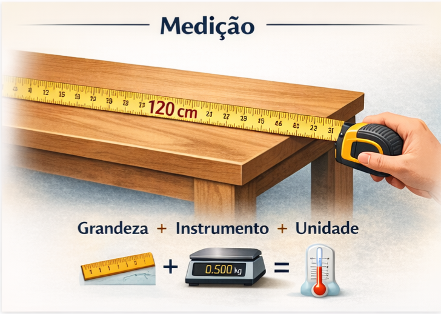
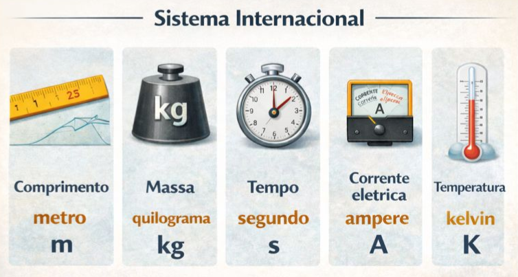

Grandezas Físicas
Medição, unidades e Sistema Internacional.
1. Grandezas físicas
As grandezas físicas são todas as propriedades dos corpos ou fenômenos naturais que podem ser medidas e expressas quantitativamente. Para que uma propriedade seja considerada uma grandeza física, é necessário que ela possa ser comparada com um padrão e representada por um valor numérico acompanhado de uma unidade.
Exemplos de grandezas físicas incluem:
- Comprimento (ex.: 2,5 m)
- Massa (ex.: 500 g ou 0,5 kg)
- Tempo (ex.: 10 s, 2 min)
- Temperatura (ex.: 25 °C ou 298 K)
- Velocidade (ex.: 20 m/s)
- Força (ex.: 15 N)
As grandezas físicas podem ser classificadas em:
- Grandezas fundamentais: definidas independentemente, como comprimento, massa e tempo;
- Grandezas derivadas: obtidas a partir de combinações matemáticas das fundamentais, como velocidade (m/s), aceleração (m/s²), força (kg·m/s²) e energia (kg·m²/s²).
2. Medição
A medição é o processo de comparar uma grandeza física com uma unidade padrão estabelecida. Toda medição envolve:
- A grandeza a ser medida;
- Um instrumento de medição (régua, cronômetro, balança, termômetro, etc.);
- Uma unidade de medida.
Por exemplo, ao medir o comprimento de uma mesa com uma régua graduada em centímetros e obter o valor 120 cm, afirma-se que o comprimento da mesa corresponde a 120 vezes a unidade padrão centímetro.
É importante destacar que nenhuma medição é absolutamente exata, pois sempre existe uma limitação do instrumento e do método utilizado, o que introduz uma incerteza associada à medida.
3. Unidades de medida e o Sistema Internacional (SI)
As unidades de medida são padronizadas internacionalmente pelo Sistema Internacional de Unidades (SI), que define sete unidades fundamentais:
| Grandeza | Unidade | Símbolo |
|---|---|---|
| Comprimento | metro | m |
| Massa | quilograma | kg |
| Tempo | segundo | s |
| Corrente elétrica | ampere | A |
| Temperatura termodinâmica | kelvin | K |
| Quantidade de matéria | mol | mol |
| Intensidade luminosa | candela | cd |
A partir dessas unidades fundamentais, definem-se as unidades derivadas, como:
- Velocidade: m/s;
- Aceleração: m/s²;
- Força: newton (N = kg·m/s²);
- Energia: joule (J = kg·m²/s²);
- Pressão: pascal (Pa = N/m²).
4. Transformações entre unidades de medida
As transformações entre unidades de medida permitem expressar uma mesma grandeza em diferentes unidades, conforme a necessidade do problema ou do contexto. Essas transformações são realizadas por meio de fatores de conversão.
Exemplos:
- Comprimento: 1 m = 100 cm → 2,5 m = 250 cm
- Tempo: 1 min = 60 s → 3 min = 180 s
- Massa: 1 kg = 1000 g → 750 g = 0,75 kg
- Velocidade: 1 m/s = 3,6 km/h → 20 m/s = 72 km/h
Essas conversões são fundamentais para resolver problemas físicos corretamente, garantindo que todas as grandezas estejam expressas em unidades compatíveis.
5. Importância das grandezas e unidades na Física
O uso correto das grandezas, das unidades e das transformações entre elas é essencial para descrever fenômenos naturais de forma objetiva e precisa, realizar cálculos físicos corretamente, comunicar resultados científicos de maneira padronizada e evitar erros conceituais e matemáticos.
Portanto, a compreensão desses conceitos constitui a base para o estudo da Física e das demais ciências naturais.